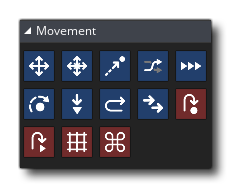

In jedem Spiel, Bewegung und Position sind von größter Bedeutung und so hat GameMaker Studio 2 eine vollständige Auswahl an Aktionen, um mit jeder Situation umzugehen. Die zwei Hauptarten zum Verschieben einer Instanz sind entweder die tatsächliche Position (x / y) im Raum oder ein Geschwindigkeits- / Richtungsvektor. Die hier gezeigten Aktionen decken beide Methoden ab und Sie können die Allgemeine Aktion Variable zuweisen verwenden, um die x- und y-Position direkt festzulegen.
Die verfügbaren Bewegungsaktionen sind wie folgt: